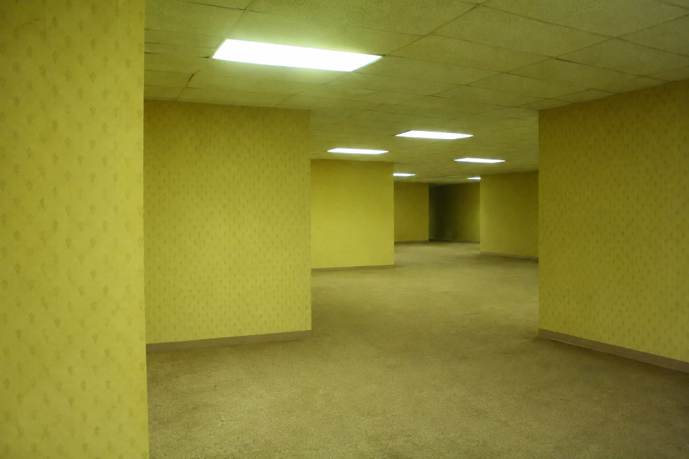

現実として採用されなかった世界
廃棄領域

神が世界創造時に試作し、削除したデータの断片が残るとされる「現実の外側」。建築物、土地、文明、生命体、物理法則、記憶が存在すると考えられている。
この領域への接続方式は不明。通常は侵入することすら難しい。多くの領域は無人で、一部には廃棄生命体が存在する。
ここに掲載された情報には原案・草案・未確認の内容が含まれる。神の管理状況や接続の法則は意図的に未解明。

神が世界創造時に試作し、削除したデータの断片が残るとされる「現実の外側」。建築物、土地、文明、生命体、物理法則、記憶が存在すると考えられている。
この領域への接続方式は不明。通常は侵入することすら難しい。多くの領域は無人で、一部には廃棄生命体が存在する。
ここに掲載された情報には原案・草案・未確認の内容が含まれる。神の管理状況や接続の法則は意図的に未解明。